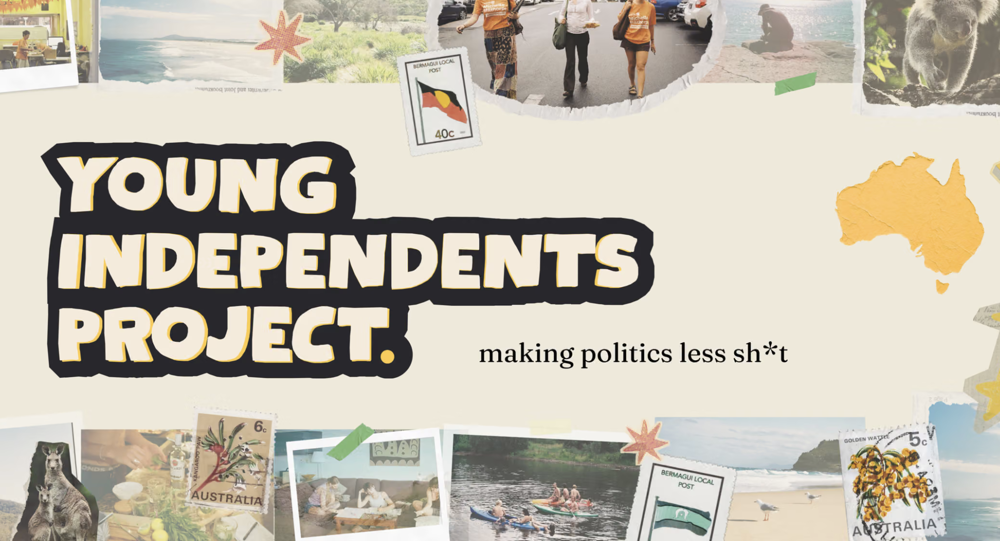
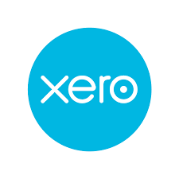
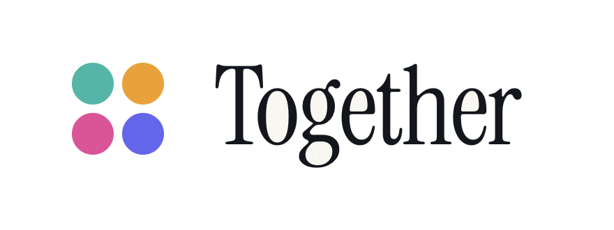

Acacia Blue
Acacia Blue Accounting is the strategic finance partner for community groups, independent campaigns, sitting members and third parties. Financial management, tax-ready books and electoral funding and disclosure requirements in one place, coordinated with qualified legal and tax advisers where a formal position is needed.
2027 NSW State Election
Setup and training for independent campaigns, so your team can run its own books with confidence.
Our purpose
To be the financial backbone of Australia's community independents movement, so that compliance, disclosure and financial management are not what holds a campaign or a cause back.
To support organisations that cannot justify, or do not want, an in-house finance team: setting campaigns up and training their teams to run their own books, and working alongside others as a fractional financial controller and CFO. Clear service boundaries, and one consistent point of contact per client.
A more professionalised, better-resourced community independents movement, where campaigns and the organisations around them have access to the financial governance and compliance support they need.
Four things that shape every piece of work.
We say what needs to be said, without hedging or dressing it up.
Our team has stood where our clients stand, on campaigns and inside community organisations.
Legislation and compliance requirements shift constantly. We invest the time to stay across those changes, so you're not chasing them alone.
We measure our own contribution against the causes this movement cares about most, not just against a compliance checklist.
What this looks like for one of the organisations we support.

Community Group
A youth-led initiative building the next generation of Australia's independent movement, making community campaigning accessible to young people setting up their first structures. Acacia Blue provides the financial governance and accounting behind it, so the team can focus on building the movement.
youngindies.org →How we support you depends on what you need to run.
We build your campaign's finance function and train your team to run it, then support you through to election day, whether you're running federally or in a state. The aim is a campaign that can run its own books.
How we work with campaigns →We run the finance function alongside you all year, as your fractional CFO and financial controller: bookkeeping, reporting and a compliance calendar tracked across federal and state jurisdictions.
How we work with members and third parties →Guidance, templates and training from the Knowledge Hub sit behind both. See the Knowledge Hub →
Why Acacia Blue
Most campaigns and advocacy organisations grow faster than their finance function. Acacia Blue gives them CFO-level oversight, accurate books and a clear view of their obligations, without building an in-house team. Plain-spoken, direct and neutral by design: the same standard of care applies regardless of the cause.
Specialists we coordinate with and route clients to, so the pieces around compliance stay connected.

Xero
Cloud accounting platform

Together Giving
Donor and fundraising infrastructure
A short conversation helps us both work out whether Acacia Blue is the right support for you, and whether your work is right for us.